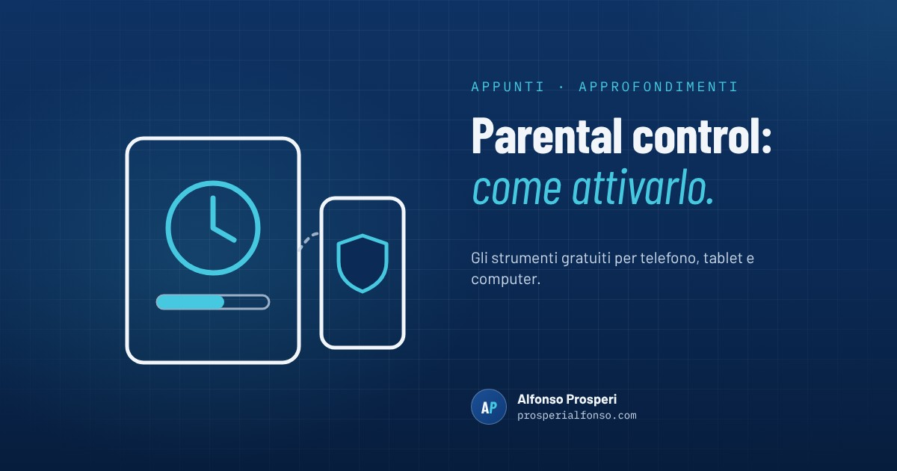

Il parental control, o filtro famiglia, permette ai genitori di scegliere cosa possono fare i figli su telefono, tablet e computer: quali app usare, per quanto tempo, quali siti evitare. Rispetto a qualche anno fa gli strumenti sono molto migliorati, sono gratuiti e già inclusi nei dispositivi.
Android: Google Family Link
Con l'app Family Link crei l'account Google del bambino e lo colleghi al tuo. Dal tuo telefono puoi:
- approvare o bloccare le app che vuole scaricare;
- impostare un limite di tempo giornaliero e l'orario della buonanotte;
- filtrare i contenuti su Chrome, Google e YouTube;
- vedere dove si trova il dispositivo.
iPhone e iPad: Tempo di utilizzo
Su iPhone e iPad c'è Tempo di utilizzo, nelle Impostazioni. Con In famiglia lo gestisci dal tuo iPhone: limiti per app, contenuti consentiti in base all'età, richiesta di permesso prima degli acquisti.
Windows e Xbox: Microsoft Family Safety
Per il computer e la console c'è Microsoft Family Safety: tempo di utilizzo, filtri per i siti su Edge, limiti di spesa e un riepilogo settimanale delle attività.
Il filtro gratuito degli operatori
Dal 21 novembre 2023, per le regole dell'AGCOM, le SIM intestate a minorenni hanno il parental control attivo e gli operatori devono offrirlo gratis anche a chi lo chiede per le altre linee. Blocca i siti per adulti, il gioco d'azzardo e contenuti simili direttamente sulla rete. Se la SIM di tuo figlio è intestata a te, puoi chiederne l'attivazione all'operatore o dalla sua app.
Browser e motori di ricerca per bambini
Per i più piccoli esistono motori di ricerca pensati per loro, come Kiddle, che mostrano solo risultati adatti. Anche YouTube Kids è più sicuro di YouTube normale.
Il filtro più importante
Nessun programma sostituisce il dialogo. I controlli vanno spiegati, adattati all'età e allentati man mano che i ragazzi crescono. Le 10 regole per navigare sicuri sono un buon modo per iniziare il discorso.